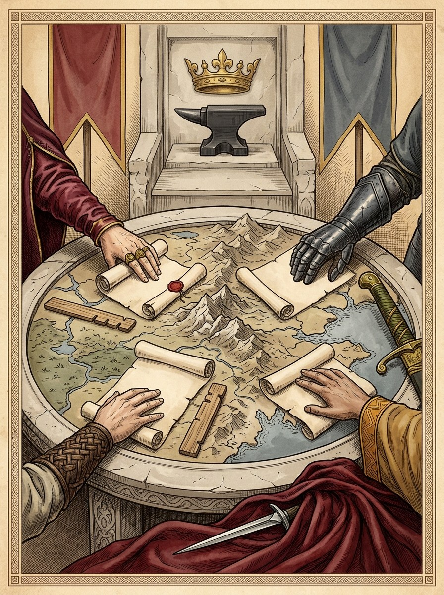

Atlas Feudal, Regências e Intrigas
Os 7 Feudos de Aurora (diretos a Altavanne), os 14 Feudos das 3 Regências Vassalas, sub-feudos e as 8 zonas de litígio do Ano 418 EF.
“Tire a cunha de Lavroga, represa a água das Cidades Suspensas ou deixe Vaarsa estrangular os canais de Voernock, e você descobrirá depressa que até o trono do Matador da Sombra precisa de quem carregue o grão, o sal e o remo.”
👑 A Dupla Cadeia de Suserania, Subinfeudação, Embargos, Forais Contraditórios & Votos no Concílio
A pirâmide imperial de vassalagem, forais e politicagem

A doença sem herdeiro do Alto Rei Severor III Valerion (N003) transformou cada foral antigo, cada marco de pedra e cada rota de abastecimento numa peça viva de negociação no Ano 418 EF. Abaixo da retórica solene dos arautos, o poder corre por contratos concretos de prata (Padrão Prata: 1 PO = 10 PP = 100 PC), lanças juramentadas e acesso a recursos estratégicos — sem pólvora, sem impérios mágicos e sem lealdade garantida de graça.
1. A Dupla Cadeia de Suserania: Vassalos Diretos vs. Vassalos de Regência
| Escalão Político | Em Aurora (Reino Capital) | Nos Reinos Vassalos (Corallis, Gaddra e Kalis) | Tributo & Dever Principal |
|---|---|---|---|
| 1º Escalão — Ápice Imperial | Coroa Solar em Altavanne (L01) — Alto Rei Severor III (N003) / Regente Valora Valerion (N004) | Coroa Solar em Altavanne (L01) (confirma ou depõe Regentes, emite Salvo-Condutos Imperiais e preside a Alta Corte do Dia) | Monopólio legal do adamante, Casa da Moeda Real e última instância de apelação nobre (S05). |
| 2º Escalão — Governo de Reino | (Exercido diretamente pelo Trono e pelo Conselho dos Seis Ofícios em Altavanne) | Os Três Regentes Vassalos (S04): Corardo della Rocca (N021), Qasir Zaharid (N022) e Grimrik Ulscold (N023) | Remetem o Tributo Anual da Regência a Altavanne (prata/escoltas, sal/montarias ou madeira negra/vidro) e mantêm a paz marítima e de fronteira. |
| 3º Escalão — Os Grandes Feudos | Os 7 Feudos de Aurora (L02–L08, S04) — respondem diretamente a Altavanne | Os 14 Feudos Regionais (L09–L22, S03–S04) — respondem ao Regente do seu reino | Chamado do Estandarte em até 15 dias, Tributo de Escudo (10%), guarda das estradas/portos/poços e baixa/alta justiça local. |
| 4º Escalão — Sub-feudos & Casas de PJs | Castelanias Vassalas (como Lavroga sob Dahrma, ou Pontáuria sob Altavanne) e Casas criadas pelos jogadores (Tomo XV) | Solares, Cáceres, Feitorias e Torres (F01–F07) concedidos pelo senhor do feudo local ou pelo Regente | Pagam cota ou serviço militar ao seu Senhor Feudal imediato — mas podem apelar ao escalão acima quando sofrem abuso comprovado! |
Quando um senhor de Baldbella (
L10), OX (L15) ou Dobalbek (L21) discorda de seu Regente, ele tenta enviar emissários secretos direto a Altavanne (L01) prometendo fidelidade maior à Coroa em troca de privilégios tarifários. Inversamente, quando Altavanne aperta os impostos, o Regente fecha os olhos para a autonomia dos seus feudos locais a fim de fazer frente comum contra a capital!2. As Cinco Armas da Politicagem Feudal (Regras Práticas de Mesa)
Em campanhas políticas ou senhoriais (combinando o Tomo XV — Casas Nobres e o Tomo XVI — Status, Fé e Submundo), os senhores raramente começam por uma guerra aberta cara e sangrenta; antes disso, usam cinco instrumentos clássicos:
- Subinfeudação Estratégica (Onde os PJs Entram no Tabuleiro): quando os personagens erguem ou reformam uma fortificação (F01–F08), eles escolhem (ou negociam) em qual dos 22 domínios (
L01–L22) sua terra se situa. Cada feudo suserano concede um Bônus Regional de Carta concreto (detalhado em cada ficha abaixo e automatizado no pluginAlenia_Casa_Nobre.rpk v1.1), mas arrasta imediatamente a Casa dos jogadores para as rivalidades e deveres daquele senhor. - Guerra de Pedágio, Embargo e Retenção Sazonal: um Senhor Feudal (
Status 3–4) pode sobretaxar ou reter temporariamente a passagem de grãos (Dahrma), pedra de mó (Lavroga), sal (Naasar), madeira naval (Kalis) ou barcaças (Merlinport) destinadas a um vizinho rival. Na mecânica do Tomo XV, um feudo sob embargo vizinho sofre-25%na Receita Bruta de comércio (D11,D14) e+20%no custo de obras até romper o bloqueio por acordo diplomático (PersuasãoouBarganha+ apoio deStatus,CD 16–20), rota alternativa ou contrabando (Submundo U02–U04). - Forais Sobrepostos e Guerra de Pergaminhos: três reinados seguidos — o corrupto Aemilius IV (
N005) vendendo cartas por prata, o heroico Severor I (N001) recompensando veteranos da Faixa Negra e o metódico Severor II (N002) redesenhando pontes e canais — deixaram cartas régias autênticas com linhas de divisa contraditórias (como ocorre hoje em VoernockZ01e FerraurZ03). Provar precedência jurídica perante o Preboste Valen de Pontáuria (N018) exige Investigação + História (CD 18) nos arquivos locais ou em Sellene — e quem falsifica selo real arrisca acusação de Alta Traição! - Pupilos de Honra (Hóspedes-Garantia) e Alianças de Sangue: para selar paz entre dois feudos desconfiados sem humilhação pública, entrega-se um filho segundo ou sobrinho como escudeiro/dama de companhia na corte vizinha (
7 a 16 anos). Ferir um pupilo sob o próprio teto destrói a honra da Casa (quebra da Lei da Anfitriã, queda imediata de-2 Statusdo Tomo XVI), mas a simples presença dele impede o pai de marchar sem hesitar — e transforma resgates discretos ou escoltas nupciais em aventuras memoráveis. - Mercadejo de Votos no Grande Concílio: caso a saúde de Severor III force a abertura de um Grande Concílio em Altavanne (
Z05), cada um dos 7 Feudos de Aurora detém voto pleno de estandarte, enquanto os 3 Regentes falam em nome dos tributos continentais. Hoje o placar está no fio da navalha:- Bloco da Regente Valora Valerion (
N004): Altavanne (L01), Merlinport (L02, condicional ao comércio aberto) e simpatia cautelosa de Aeraneas (L07, se evitar massacre). - Bloco Marcial de Lucian Leonastis (
N006): Vaarsa (L04) e simpatizantes armados nas castelanias pressionadas da fronteira sul. - Pêndulos Cobrando Preço Alto: Dahrma (
L03), Yõketsu (L05), Altrax (L06) e Cidades Suspensas (L08) — exatamente onde cada missão cumprida pelos jogadores pode virar um feudo inteiro de lado!
- Bloco da Regente Valora Valerion (
Coroa Imperial e os Sete Grandes Feudos de Aurora

No Reino Capital de Aurora, não há intermediário entre os sete grandes senhores territoriais e o Paço Real: Merlinport, Dahrma, Vaarsa, Yõketsu, Altrax, Aeraneas e as Cidades Suspensas respondem todos diretamente a Altavanne (L01). Abaixo está o quadro sinótico do reino em 418 EF, seguido das fichas completas de cada domínio:
| Código & Domínio | Senhor Feudal (Ano 418) | Casa / Instituição | Sub-feudos & Disputas Diretas | Inclinacão em Altavanne |
|---|---|---|---|---|
L01 Altavanne (Coroa) | Alto Rei Severor III (N003) / Regente Valora (N004) | Casa Valerion | Controla Pontáuria (Casa de Pontáuria); recebe homenagem de L02–L08 e dos 3 Regentes | Trono / Regência Solar |
L02 Feudo de Merlinport | Lorde Marcus Scutauria (N014) | Casa Scutauria | Atrito alfandegário no estuário e rotas dos Pântanos (Z04) | Lealista condicional a Valora |
L03 Feudo de Dahrma | Lorde Lorian Montavalle (N012) | Casa Montavalle | Controla a Castelania de Lavroga (Z02) | Neutro / Pêndulo do Pão |
L04 Feudo de Vaarsa | Marechal Lucian Leonastis (N006) | Casa Leonastis | Disputa Voernock com Yõketsu (Z01); vigia Rubecina (Z07) | Líder da Oposição Marcial |
L05 Feudo de Yõketsu | Senhor Kenshin Tsurumaru | Casa Tsurumaru | Disputa Voernock com Vaarsa (Z01) | Autonomista / Voto em aberto |
L06 Feudo de Altrax | Castelã Aurelia d'Altrax (N016) | Casa d'Altrax | Vigia Pântanos Nebulosos, Specula e crise de Cadwyn (Z04) | Independente / Desconfiada |
L07 Feudo de Aeraneas | Grão-Lorde Aurelian Ferraris (N015) | Casa Ferraris | Disputa os Montes Ferraur com as Cidades Suspensas (Z03) + Greve interna | Tende a Valora contra intervenção militar |
L08 Feudo das Cidades Suspensas | Senhora-Guardiã Aerwen ferch Taldor (N024) | Conselho das Copas | Disputa os Montes Ferraur com Aeraneas (Z03); controla o entreposto de Vergod | Tensa / Exige respeito ao Foral |
Domínio Régio de Altavanne e Castelania de Pontáuria
Sede, Escala & Força: Paço Real de Altavanne (F10, 2.800 PV, LE 18), Grande Catedral do Sol de Seis Raios (N019) e a ponte fortificada de Pontáuria (F08, guardada pela vassala Casa de Pontáuria de N018 e N020); 3.000+ soldados da Guarda Real e da Faixa Negra, mais barcaças armadas no Rio Aurélio (E04–E06).
Economia, Recursos & Sub-feudos: Casa da Moeda Real (Áureos, Escudos e Vinténs), pedágios centrais da bacia do Aurélio, arquivos da Chancelaria, tribunais do Preboste e hortas nobres onde floresce a Rosa-de-cera (H08) e se servem banquetes de Folhado de escama-terrestre (C02). Mantém suserania direta sobre a Castelania de Pontáuria.
Concessão a Vassalos (Bônus para Casa de PJs): Casas menores com terra concedida nas terras régias centrais recebem +1 em testes formais de Etiqueta e Persuasão perante magistrados reais e desconto de -10% na contratação de Senescais (G11) e Mestres de Armas (G12), mas ficam sob olho imediato do Preboste (N018) e são as primeiras convocadas em crise na capital.
Alianças, Intrigas & Ganchos em Mesa: A agonia de Severor III transformou cada corredor de Altavanne num campo minado entre os emissários de Valora (N004), os oficiais de Leonastis (N006), os auditores de Serina Scutauria (N013) e os despachos opacos de Cassian d'Altrax (N017) (Z05).
Feudo de Merlinport
Sede, Escala & Força: Cidadela Portuária e Torre da Corrente de Merlinport (F09 + F07, bloqueando a boca do estuário), apoiada por 950 marinheiros-soldados, besteiros de cais (G03) e a maior frota mercante e fluvial de Aurora (18 navios entre E04, E06, E08 e E09).
Economia, Recursos & Sub-feudos: Alfândegas de importação e exportação entre o Rio Aurélio e o Mar dos Corais, armazéns de grãos e lã, guindastes pesados liderados por guildas livres (N069), estaleiros fluviais e intenso intercâmbio de Letras em Cera Azul com Corallis.
Concessão a Vassalos (Bônus para Casa de PJs): Um feudo costeiro ou fluvial vassalo de Merlinport constrói Armazéns e Cais (D14) com -20% de custo em prata e soma +15 PP/mês extras por cada D14 ativo, devendo em troca ceder barcos ou escolta contra piratas e contrabandistas no estuário.
Alianças, Intrigas & Ganchos em Mesa: Marcus (N014) sustenta Valora por intermédio da irmã Serina (N013), mas ameaça reter receitas alfandegárias se Altavanne decretar tarifas de guerra. Nos trapiches enevoados da Âncora de Cinza, espiões kalitas (N030), compradores de Baldbella (N028) e boatos sobre o piloto desperto Beren do Cais (N027) cruzam-se todas as noites (Z04).
Feudo de Dahrma (Suserano de Lavroga)
Sede, Escala & Força: Paço Murado dos Celeiros de Dahrma (F08 cercado pelas férteis várzeas do afluente Várzea-Clara) mais a subordinada Fortaleza das Pedreiras de Lavroga (F07/F08 na garganta sudoeste, administrada pelo vassalo Castelão Galeran de Lavroga); 1.100 homens somados, destacando-se a célebre cavalaria ligeira de estrada (G05/G06) e engenheiros canteiros de Lavroga (G07/G09).
Economia, Recursos & Sub-feudos: O maior celeiro de trigo, cevada e criação de Galinha-dourada (A13, base da Panela de Dahrma C04) de toda Aurora — combinado ao controle direto sobre Lavroga, de onde saem as melhores mós de moinho, blocos de cantaria aparelhada e a rara Flor-de-pedra (H16).
Concessão a Vassalos (Bônus para Casa de PJs): Casas vassalas de Dahrma/Lavroga recebem +15 PP/mês adicionais na primeira Aldeia Arrendada (D09) e pagam -15% na construção de Moinhos (D10), mas são obrigadas a entregar cota de grãos ou escoltar comboios de pedra entre Lavroga e o vale.
Alianças, Intrigas & Ganchos em Mesa: Lorian (N012) sorri para ambos os lados em Altavanne enquanto tenta limpar a velha mancha militar atribuída ao antepassado Corvus (N011). Porém, dentro de seu próprio domínio ferve o ressentimento de Lavroga (Z02): o Castelão Galeran acusa Dahrma de confiscar a renda das pedreiras e negligenciar as patrulhas contra saqueadores das Estepes — fresta explorada tanto por emissários de Leonastis (N006) quanto por veteranos desertores como Cassian de Lavroga (N029).
Feudo de Vaarsa
Sede, Escala & Força: Praça-Forte de Escarpa de Vaarsa (F09, 1.850 PV, LE 16, cravada na garganta dos Picos de Rubecina com 3 trabucos fixos D06), apoiada por 1.450 soldados — a mais disciplinada infantaria pesada (G04) e engenharia de montanha de Aurora.
Economia, Recursos & Sub-feudos: Pedágios das caravanas meridionais que cruzam o Passo de Rubecina trazendo sal e cavalos de Gaddra, minas secundárias de ferro comum, rebanhos alpinos e forjas militares de campanha.
Concessão a Vassalos (Bônus para Casa de PJs): Vassalos juramentados a Vaarsa contratam Soldados Regulares (G02) e Infantes Pesados (G04) com -15% no custo inicial e recebem +1 permanente nos testes de Moral em cerco, mas devem responder imediatamente às marchas convocadas pelo Marechal.
Alianças, Intrigas & Ganchos em Mesa: Enquanto Lucian (N006) pressiona Altavanne pelo Grande Concílio e ameaça marchar sobre Aeraneas, seus capitães no leste avançam estacas e postos fiscais para dentro do Pântano de Voernock, em choque aberto contra o Feudo de Yõketsu (Z01), ao mesmo tempo em que o ameaçado fechamento do Passo de Rubecina por clãs de Gaddra (Z07) estrangula o cofre de Vaarsa!
Feudo de Yõketsu
Sede, Escala & Força: Castelo Lacustre-Costeiro de Yõketsu (F08 + F07 erguido sobre terraços de pedra encaixada sem argamassa rígida e canais de maré na costa leste), guarnecido por 850 espadachins de armadura lamelar lacada, arqueiros navais de convés estreito (N077) e embarcações costeiras velozes (E03, E05, E07) guiadas pelos pilotos da família Tsurin (N078).
Economia, Recursos & Sub-feudos: Comércio costeiro oriental (olhando de vigia tensa para o Mar Intransponível e Kalis), pesca curada, porcelana de alta queima e caldos nobres (N079), cutelaria dobrada sem adamante, arrozais alagados da baixada leste e coleta de turfa e ervas na borda sul de Voernock.
Concessão a Vassalos (Bônus para Casa de PJs): Vassalos do Feudo de Yõketsu recebem +1 no Índice de Defesa de tropas leves/arqueiros (G02, G03), redução de -15% na manutenção de embarcações costeiras (E01–E06) e acesso às escolas de lâmina ágil de Yõketsu, assumindo o dever de patrulhar os canais de Voernock e vigiar velas vindas de Kalis.
Alianças, Intrigas & Ganchos em Mesa: Fundado por navegadores ancestrais e integrado à Coroa mediante o Foral das Garças (que preserva língua, etiqueta e escolas marciais próprias em troca de tributo direto a Altavanne), Yõketsu enfrenta hoje sua maior ameaça terrestre: as colunas da Casa Leonastis de Vaarsa tentam anexar as pontes, canais de turfa e pesqueiros do Pântano de Voernock (Z01). Kenshin Tsurumaru — um estrategista frio de cinquenta anos que jamais levanta a voz — deixou claro em Altavanne que seu voto no Concílio pertence a quem reconhecer, com selo irrevogável, a fronteira histórica de Yõketsu sobre Voernock.
Feudo de Altrax
Sede, Escala & Força: Forte de Altrax (F08, 1.380 PV, LE 14, protegido por fosso alagado D01, barbacã D03 e poterna na bruma D08), apoiado por 750 patrulheiros de pântano, besteiros, cães de rastro e batedores que conhecem cada trilha seca entre os Pântanos Nebulosos e o litoral frio do Mar das Cinzas.
Economia, Recursos & Sub-feudos: Diques e canais de drenagem da Sangria de Altrax (T092), peles impermeáveis, breu vegetal, pesca fria, pedágios de escolta na Estrada da Bruma e jurisdição nominal sobre postos arruinados como a Torre de Specula (F04).
Concessão a Vassalos (Bônus para Casa de PJs): Reerguer uma ruína ou manter feudo sob Altrax reduz em -5% adicionais o custo de reforma de ruínas (40% em vez de 45%) e concede +2 em alertas antecipados de patrulha e Sobrevivência regional, exigindo vigília constante contra salteadores e criaturas da bruma.
Alianças, Intrigas & Ganchos em Mesa: A Casa d'Altrax nunca esqueceu que Severor I recuou na promessa de terras florestais feita ao ancestral Darian (N008) após a caçada de 356 EF. Aurelia (N016) recusa submeter seu forte ao Marechal Leonastis, mas também desconfia da capital — enquanto seu primo Cassian d'Altrax (N017) manobra nos Selos Secretos e o desaparecimento do emissário silvano Cadwyn (N025) perto de suas terras ameaça incendiar toda a fronteira norte (Z04).
Feudo de Aeraneas
Sede, Escala & Força: Cidadela-Forja de Aeraneas (F09, encravada nos contrafortes dos Montes Ferraur sobre fornalhas de tiragem natural e galerias blindadas), defendida por 900 guardas da Bigorna, besteiros pesados e a guilda dos Mestres do Malho Sagrado.
Economia, Recursos & Sub-feudos: O coração estratégico de Alenia — extração e refino de adamante, fabricação de brocas cirúrgicas e mecânicas para Corallis, ligas temperadas e carvão mineral de alta queima.
Concessão a Vassalos (Bônus para Casa de PJs): Casas vassalas de Aeraneas erguem Forjas Senhoriais (D12) pela metade do preço (750 PP) e somam +20 PP/mês extras de renda metalúrgica quando mantêm Mestre Ferreiro (G10), sob proibição absoluta (pena de morte por Alta Traição) de desviar uma única lasca de adamante sem selo.
Alianças, Intrigas & Ganchos em Mesa: Aurelian (N015) vive o pior inverno de sua vida: quarenta mortos num desabamento paralisaram as galerias em greve liderada por veteranos como Valen Serrador (N070); Leonastis (N006) exige intervir a ferro; e a necessidade desesperada de abrir novos veios rasos e cortar lenha pesada a leste colocou Aeraneas em disputa territorial direta contra o Feudo das Cidades Suspensas pelos Montes Ferraur (Z03).
Feudo das Cidades Suspensas (e Entreposto de Vergod)
Sede, Escala & Força: Plataformas das Árvores-Mestras das Cidades Suspensas (equivalente defensivo a F09 nas copas milenares, protegida por pontes destacáveis N072, seiva retardante de fogo e calhas pluviais N076) somada à estacada mercantil de Vergod (F03/F05 na borda da mata); 1.000 vigias das folhas, arqueiros de dossel (G03 de elite) e batedores invisíveis sob a copa.
Economia, Recursos & Sub-feudos: Resinas impermeáveis, madeiras nobres de arco, mel silvestre, peles de inverno, ervas medicinais raríssimas (Tomo X) e controle do comércio fronteiriço em Vergod (onde trocam produção florestal por sal, ferramentas de ferro e prata cortada).
Concessão a Vassalos (Bônus para Casa de PJs): Casas ou guardiões investidos sob o feudo de Vergod/Cidades Suspensas erguem Motas de Madeira (F03) e Ervanários (D15) com -25% de custo, e seu Físico/Herbalista (G13) dobra a produção mensal de cataplasmas, desde que jamais pratiquem corte raso ou mineração predatória.
Alianças, Intrigas & Ganchos em Mesa: Reconhecidas pela Chancelaria de Altavanne como o sétimo grande feudo de Aurora (fórmula jurídica que impede lordes vizinhos de declarar a floresta "terra sem dono", em troca do compromisso de Vergod responder diretamente ao Alto Rei), as Cidades Suspensas enfrentam hoje choque frontal com Aeraneas pelos Montes Ferraur (Z03): escavações e carvoarias avançaram sobre as encostas orientais que alimentam as nascentes da mata, e o emissário Cadwyn ap Merion (N025) desapareceu justamente quando reunia provas de prospecção ilegal de adamante dentro dos limites do foral!
Liga Talassocrática de Corallis

Fora de Aurora, a Coroa governa através de pirâmide em dois degraus: os feudos regionais de Corallis (L09–L13), Gaddra (L14–L17) e Kalis (L18–L22) prestam juramento, impostos e tropas ao Regente do seu respectivo reino, e o Regente responde pessoalmente a Altavanne (L01). (Lembrando sempre o limite vivo do cenário: fora dessas praças civilizadas, corsários de Ravena, sucateiros do Ferro Velho, tribos livres das dunas e clãs isolados da Floresta Negra não curvam o joelho nem ao Regente nem ao Alto Rei.)
Feudo-Sede de Alineus
Sede, Escala & Força: Palácio do Arsenal e Molhe Fortificado de Alineus (F09 + F07), 1.100 infantes marinhos e 14 galés de escolta e recife (E09, E10).
Economia, Recursos & Sub-feudos: Estaleiros maiores da Liga, rota principal com Merlinport, seguros navais e taxas de salvamento disputadas com Baldbella (Z06).
Concessão a Vassalos (Bônus para Casa de PJs): -15% na compra/reparo de navios (Tomo XIV) e isenção de ancoragem em Alineus; exige escolta naval à Regência.
Alianças, Intrigas & Ganchos em Mesa: Corardo (N021) equilibra quatro cidades orgulhosas enquanto tenta investigar Thanatos antes que Altavanne ou Kalis monopolizem o segredo.
Feudo Mercantil de Baldbella
Sede, Escala & Força: Paço dos Canais e Forte da Laguna de Baldbella (F08 + F07), 800 guardas de canal e esquadrilha de galés rápidas (E10).
Economia, Recursos & Sub-feudos: Bancos emissores de Cera Azul, colégios de cirurgia (N035), oficinas tipográficas (N055), herbários (N032) e pesca de pérolas.
Concessão a Vassalos (Bônus para Casa de PJs): Linha de crédito em Cera Azul ampliada em +50% e contratação de Físico Cirurgião (G13) com -30% de salário; cobra participação nas tarifas dos recifes.
Alianças, Intrigas & Ganchos em Mesa: Valerio Corvella lidera o boicote tarifário contra Alineus (Z06), ameaçando apelar direto a Altavanne se della Rocca tocar nos privilégios de pilotagem de Baldbella.
Feudo Forjador de Stoneforge
Sede, Escala & Força: Fortaleza Industrial de Stoneforge nos Montes Pedramar (F09), 750 besteiros de precisão e mestres artilheiros (G07).
Economia, Recursos & Sub-feudos: Engenhos de torção e contrapeso (D05, D06, M08–M12), relojoaria naval, bombas hidráulicas (N089) e metalurgia fina dependente de lascas de adamante vindas de Aeraneas.
Concessão a Vassalos (Bônus para Casa de PJs): -20% no custo de Balistas (D05) e Trabucos (D06) e +1 nos disparos de engenhos de muralha; exige defender comboios técnicos nos Montes Pedramar.
Alianças, Intrigas & Ganchos em Mesa: A greve em Aeraneas (L07) deixou as oficinas de Stoneforge sem pontas de adamante — levando guildas impacientes a comprar lotes suspeitos vindos de O Ferro Velho!
Feudo Bancário e Agrícola de Biemont e Portocala
Sede, Escala & Força: Solar-Cidadela das Colinas de Biemont (F08) e Torre Pesqueira de Portocala (F07 ao sul, de frente para O Ferro Velho), com 650 mercenários contratados e navios-correio (E05).
Economia, Recursos & Sub-feudos: Vinhedos, olivais, salinas costeiras, seguros marítimos da Casa Falcenzo e comércio discreto (oficialmente negado!) com sucateiros do sul (N057).
Concessão a Vassalos (Bônus para Casa de PJs): Empréstimos para construção senhorial com juros reduzidos pela metade e +20 PP/mês em rotas comerciais (D11/D14); exige abrir os livros contábeis do feudo aos auditores Falcenzo.
Alianças, Intrigas & Ganchos em Mesa: Lorenza (N086) financia metade dos armadores endividados da Liga, transformando naufrágios nos recifes em cadeiras políticas sob seu controle (Z06).
Claustro-Feudo de Sellene e Farol de Claramar
Sede, Escala & Força: Complexo Murado da Academia de Sellene (F08 sobre abóbadas subterrâneas seladas) e o estratégico Farol de Claramar (F04/F07), com 400 guardas juramentados da Chave da Maré.
Economia, Recursos & Sub-feudos: Cartografia náutica, lentes do Observatório Helmer, ensino superior, perícias documentais e taxas de sinalização marítima.
Concessão a Vassalos (Bônus para Casa de PJs): +2 em História, Investigação e Contraespionagem documental da Casa e acesso prioritário a mestres escribas; exige proteger expedições científicas da Academia.
Alianças, Intrigas & Ganchos em Mesa: Preso entre a cobrança prática de Stoneforge, a curiosidade perigosa sobre Thanatos e o segredo régio sob seus pés (N093–N096), Matteo (N031) teme infiltrações de Kalis mais do que tempestades.
Confederação Tribal de Gaddra
Emirado-Sede de Naasar e Lago Bayd
Sede, Escala & Força: Alcáçova das Cisternas de Naasar (F09 + F06 sobre o grande aquífero artesiano perfurado em 380 EF), com 1.200 lanceiros das águas e ginetes do deserto (G05).
Economia, Recursos & Sub-feudos: Poços profundos de água doce (N080), extração de blocos de Sal de Bayd (1 kg = 1 PP), tribunais de conciliação (N059) e pedágios da Rota do Sal.
Concessão a Vassalos (Bônus para Casa de PJs): Cáceres e sedes vassalas recebem Cisterna Abobadada (D07) com -30% de custo e imunidade a embargos hídricos em Naasar; exige guardar a Lei da Hospitalidade e escoltar caravanas de sal.
Alianças, Intrigas & Ganchos em Mesa: O assassinato recente do Árbitro Malid al-Hajar (N068) pôs Qasir (N022) contra a parede: se não entregar um culpado verdadeiro logo, Vargheim e os clãs livres incendiarão a fronteira (Z07).
Feudo das Arenas e Coudelarias de OX
Sede, Escala & Força: Cidadela-Arena de Rocha Vermelha de OX (F08), 900 cavaleiros das dunas e guardas de caravana.
Economia, Recursos & Sub-feudos: Criação das melhores montarias resistentes ao calor de Alenia (N060), mercados de couro/arreios, grandes jogos de arena e entreposto oeste-leste.
Concessão a Vassalos (Bônus para Casa de PJs): Constrói Coudelarias (D16) com -25% de custo e reduz em mais -5 PP/mês o soldo de unidades montadas (G05/G06); exige fornecer cavalos de remonta à Regência.
Alianças, Intrigas & Ganchos em Mesa: Khalur obedece a Qasir em público, mas lucra vendendo montarias tanto a compradores de Vaarsa quanto a chefes nômades insubmissos (N081), jogando com a sede de ambos os lados.
Feudo Costeiro de Qal-Zahar e Feira de Suq-Ramad
Sede, Escala & Força: Forte Marítimo de Qal-Zahar (F07/F08) e jurisdição sazonal sobre os pavilhões murados de Suq-Ramad (F05), com 600 guardas costeiros e sambucos ligeiros no Mar de Zahar.
Economia, Recursos & Sub-feudos: Especiarias meridionais, tâmaras, incensos, tapetes e a grande feira de inverno/primavera de Suq-Ramad (N058) — rota marítima alternativa quando o Passo de Rubecina trava!
Concessão a Vassalos (Bônus para Casa de PJs): +20 PP/mês em Estalagens/Feitorias (D11) ou Cais (D14) pelo fluxo do Mar de Zahar; exige combater contrabandistas costeiros e piratas do sul.
Alianças, Intrigas & Ganchos em Mesa: Se o Passo de Rubecina fechar (Z07), todo o comércio entre Aurora, Corallis e Gaddra precisará passar pelos cais de Tarik ibn Sahir — motivo pelo qual certos mercadores em Qal-Zahar torcem secretamente pelo conflito!
Marca Montanhesa de Vargheim
Sede, Escala & Força: Baluarte das Escarpas de Vargheim (F09), 1.000 guerreiros montanheses ferozes (substrato setentrional assimilado ao deserto).
Economia, Recursos & Sub-feudos: Pastoreio de escarpa, cobre/ferro áspero, escoltas armadas de desfiladeiro e controle do flanco oriental do Lago Bayd e das rotas que sobem rumo a Rubecina.
Concessão a Vassalos (Bônus para Casa de PJs): Guarnições locais recebem +2 em Intimidação e combate em terreno montanhoso/árido e milícias (G01) lutam sem penalidade de moral até metade das baixas; exige arbitrar rixas de sangue constantes.
Alianças, Intrigas & Ganchos em Mesa: Halvor assinou o pacto com Qasir Zaharid para evitar fome no inverno, mas seus próprios sobrinhos juram que lâminas aurorianas mataram o Árbitro em Naasar e exigem fechar o Passo de Rubecina contra Vaarsa (Z07).
Despotado Velado de Kalis
Feudo-Sede da Cidadela de Kalgard
Sede, Escala & Força: Cidadela Dupla de Basalto de Kalgard (F10, 2.600 PV, LE 18), 1.500 soldados de ferro, agentes do Véu e drakkares reais (E11).
Economia, Recursos & Sub-feudos: Banca central das Talhas Cifradas, tributos de madeira negra naval enviados a Altavanne, peles frias e arquivos de informação continental.
Concessão a Vassalos (Bônus para Casa de PJs): +2 adicional em Contraespionagem da Casa (cumulativo com G14) e desconto de -25% na contratação de Mestres de Sussurros (G14); exige relatórios trimestrais à Cidadela.
Alianças, Intrigas & Ganchos em Mesa: Grimrik (N023) paga em dia o tributo a Altavanne para ninguém ter pretexto de cruzar o Mar Intransponível, enquanto disputa na surdina com Aurora e Corallis os segredos dos Despertos de Thanatos.
Feudo Naval de Kragstad
Sede, Escala & Força: Fortaleza Costeira de Kragstad (F09 + F07), 950 marinheiros couraçados e a principal esquadra de patrulha de drakkares (E11) do norte kalita.
Economia, Recursos & Sub-feudos: Faróis de óleo de baleia, pesca de mar gelado, ferro de Jarnham e proteção naval contra os corsários do Arquipélago Ravena.
Concessão a Vassalos (Bônus para Casa de PJs): Constrói Fortes Costeiros (F07) e Defesas de Muralha (D02–D05) com -15% de custo; exige manter farol aceso e fornecer patrulha costeira.
Alianças, Intrigas & Ganchos em Mesa: Uma das três grandes Casas do Conselho de Kalgard — Torvald cobra de Grimrik mais recursos para a frota e vê com desconfiança operações clandestinas sujas que desonram a marinha (N083).
Feudo Judicial e Florestal de Drakenhall
Sede, Escala & Força: Paço-Fortaleza de Drakenhall (F08 na borda domesticada da Floresta Negra), 850 alabardeiros e patrulheiros florestais.
Economia, Recursos & Sub-feudos: Corte controlado e secagem da preciosa madeira negra naval, resinas impermeáveis, peles e os rigorosos tribunais comerciais onde atua Sigrun Grimsen (N063).
Concessão a Vassalos (Bônus para Casa de PJs): Constrói Serrarias (D13) com -25% de custo e soma +20 PP/mês na exportação de madeira curada; exige conter incursões de feras (Tronco-de-Sangue do Tomo IV) e bandos livres de Myrkholm.
Alianças, Intrigas & Ganchos em Mesa: Borhild (N082) controla os depósitos sem os quais nem Kalgard cumpre o tributo a Altavanne nem Dobalbek constrói um casco sequer — usando cada viga como alavanca política no Conselho.
Feudo Portuário e Bancário de Dobalbek
Sede, Escala & Força: Porto Murado Ocidental de Dobalbek (F08 + F07, voltado diretamente para a costa leste de Aurora), 700 guardas portuários e navios mercantes reforçados (E06, E08, E11).
Economia, Recursos & Sub-feudos: Grandes estaleiros civis (N062), correio cifrado transmarino e casas de compensação de Talhas Cifradas.
Concessão a Vassalos (Bônus para Casa de PJs): Taxa de emissão de Talhas Cifradas reduzida pela metade (4%) e +15% de velocidade em obras navais/portuárias (D14); exige sigilo comercial absoluto.
Alianças, Intrigas & Ganchos em Mesa: Porta de entrada e saída entre Kalis e Aurora — onde mercadores moderados querem comércio limpo com Yõketsu (L05) e Merlinport (L02), enquanto redes de sombra como a de Tordan (N030) usam os mesmos navios (Z08).
Feudo Vidreiro e Alquímico de Fugong e Kalima
Sede, Escala & Força: Cidadela Portuária Meridional de Fugong (F08) e Forte Avançado de Kalima (F07, vigiando o canal da Ilha das Safiras), com 750 soldados costeiros.
Economia, Recursos & Sub-feudos: Fornos de vidro escuro temperado (N085), reagentes alquímicos, tintas raras e comércio tenso com boticários da Ilha das Safiras.
Concessão a Vassalos (Bônus para Casa de PJs): +25 PP/mês em oficinas/ervanários alquímicos (D12/D15) e acesso legal a vidraria resistente a ácido; exige reprimir contrabando sem selo vindo de Porto Esmeralda.
Alianças, Intrigas & Ganchos em Mesa: Em Fugong pulsa a oposição mercantil mais viva contra o fechamento militar de Kalgard (Z08): guildas locais querem vender diretamente para Corallis e Aurora sem passar pelos pedágios de Grimrik (N023).
Oito Frentes Quentes de Disputa Territorial e Intriga

Abaixo estão os oito focos ativos de conflito entre feudos (Z01–Z08), prontos para uso imediato como pano de fundo de campanhas ou contratos diretos para o grupo:
A Disputa pelo Pântano de Voernock (Yõketsu L05 × Vaarsa L04)
Feudos em Choque: Feudo de Yõketsu (L05, Kenshin Tsurumaru) contra Feudo de Vaarsa (L04, Marechal Lucian Leonastis) — ambos vassalos diretos de Altavanne (L01).
O Que Está em Jogo: Estendido ao norte de Yõketsu e a nordeste do eixo de Vaarsa, o Pântano de Voernock parece inóspito apenas para quem nunca olhou um livro-razão. Ele guarda três ativos vitais: (1) as pontes e canais interiores que ligam Yõketsu ao vale do Rio Aurélio sem passar pelas gargantas controladas pelos Leonastis; (2) bancos imensos de turfa combustível, ciprestes imputrescíveis e Casca-amarga (H17), indispensáveis contra febres de campanha; e (3) uma posição de flanco militar — se Vaarsa fortificar a borda sul de Voernock, Leonastis poderá isolar Yõketsu pelo continente e ameaçar Altavanne pelo leste!
A Guerra de Forais e Incidentes: Vaarsa exibe uma patente militar de Severor III autorizando "erguer estacadas de segurança contra feras e salteadores nos charcos orientais"; Yõketsu apresenta o Foral das Garças ratificado por Severor I, que garante às barcas rasas de Yõketsu os direitos perpétuos de pesca, coleta e passagem até os marcos de pedra antigos. Na última lua, patrulhas de Vaarsa cobraram pedágio de barqueiros orientais na Ponte do Junco Negro, e espadachins de Tsurumaru desarmaram seis lanceiros de Leonastis sem matá-los, devolvendo-os amarrados sobre uma chata — humilhação que deixou os capitães de Vaarsa furiosos.
Como os PJs Entram na Intriga: Arbitrar a demarcação em nome do Preboste (N018) enfrentando na névoa tanto sabotadores humanos quanto perigos reais do charco (Serpente-do-Pântano, Lanterna-de-Turfa e O Repetidor do Tomo IV); escoltar uma carga secreta de Casca-amarga (H17); ou receber de Tsurumaru ou Leonastis uma Carta de Concessão (F03/F04) exatamente na divisa contestada!
O Jugo do Grão Sobre a Pedra: Dahrma Controlando Lavroga (Sub-vassalagem em L03)
Feudos em Choque: Feudo de Dahrma (L03, Lorde Lorian Montavalle) como suserano direto sobre a Castelania Vassala de Lavroga (Castelão Galeran de Lavroga).
O Que Está em Jogo: Após o Inverno da Fome de 352 e a reconstrução pós-Sombra, a Coroa subordinou as pedreiras e o passo sudoeste de Lavroga ao Feudo de Dahrma, unificando num só domínio o trigo dos vales e as mós de pedra de Lavroga que moem a farinha de metade de Aurora. Para Lorian Montavalle (N012), manter Lavroga sob rédea curta garante cantaria barata para pontes e celeiros e protege o flanco sudoeste de Dahrma contra incursões vindas das Estepes Amaldiçoadas.
A Ferida Política: Em Lavroga, canteiros, engenheiros e soldados sentem-se tratados como servos de segunda classe: Dahrma recolhe um terço dos pedágios da pedra, atrasa o envio de cavalaria quando bandos das estepes atacam rebanhos de Lavroga e veta vendas diretas de blocos aparelhados para Vaarsa. Agentes discretos de Lucian Leonastis (N006) já sussurraram ao orgulhoso Castelão Galeran que, num Grande Concílio vitorioso, Lavroga seria emancipada de Dahrma e elevada a oitavo feudo direto de Altavanne! Não por acaso, militares ressentidos saídos de lá — como Cassian de Lavroga (N029) na Torre de Specula — tornaram-se presas fáceis para contratos clandestinos.
Como os PJs Entram na Intriga: Investigar um bloqueio "acidental" de mós de moinho que ameaça parar a moagem de outono em Dahrma; descobrir quem está comprando oficiais da guarnição de Lavroga; ou governar uma casa menor entre Dahrma e Lavroga tendo de decidir a quem obedecer quando ordens opostas chegam no mesmo dia.
A Guerra Fria dos Montes Ferraur (Cidades Suspensas L08 × Aeraneas L07)
Feudos em Choque: Feudo das Cidades Suspensas (L08, Senhora-Guardiã Aerwen ferch Taldor N024) contra Feudo de Aeraneas (L07, Grão-Lorde Aurelian Ferraris N015) — ambos respondendo diretamente a Altavanne (L01).
O Que Está em Jogo: Os Montes Ferraur não são uma parede vazia entre os dois feudos: suas vertentes ocidentais e centrais abrigam os poços profundos de adamante de Aeraneas, enquanto suas vertentes orientais cobertas de mata antiga formam a bacia hidrográfica que abastece as calhas suspensas das árvores-mestras (N076) e marca o limite sagrado do Foral de Vergod. Com o esgotamento das galerias seguras e o desabamento que matou 40 mineiros, capatazes e financiadores clandestinos tentaram contornar a rocha dura abrindo prospecções e fornos de carvão nas encostas orientais arborizadas, turvando córregos com escória metálica e derrubando pinheiros-reis.
O Estopim no Ano 418: Cadwyn ap Merion (N025) foi enviado por Aerwen (N024) para documentar os marcos violados nos contrafortes de Ferraur e desapareceu antes de chegar a Altavanne. Enquanto vigias jovens das copas exigem cortar as cordas de comércio em Vergod e flechar qualquer picareta vista a leste da crista, os mineiros em greve em Aeraneas (N070) temem passar fome se o reino fechar novas frentes de trabalho, e Aurelian Ferraris (N015) jura que as escavações ilegais na mata não levaram sua assinatura!
Como os PJs Entram na Intriga: Rastrear os verdadeiros financiadores das galerias clandestinas nos Montes Ferraur; resgatar Cadwyn antes que comece uma guerra de emboscadas na floresta; ou escoltar uma comissão mista de Mestres do Malho Sagrado e Anciãos do Ramo até as cristas nevadas de Ferraur.
A Estrada da Bruma e os Canais dos Pântanos Nebulosos (Altrax L06 × Merlinport L02)
Feudos em Choque: Feudo de Altrax (L06, Aurelia d'Altrax N016) e Feudo de Merlinport (L02, Marcus Scutauria N014), permeados por redes de contrabando (U02–U04).
O Que Está em Jogo: O desvio da barca Estrela de Aurélio e o uso das ruínas da Torre de Specula revelaram um ponto cego jurisdicional: Merlinport controla o baixo rio, Altrax patrulha o norte dos Pântanos Nebulosos, e entre os dois estende-se um labirinto de igarapés por onde escoam cargas desviadas de adamante e desembarcam agentes de Kalis (N030). Reerguer Specula (F04) dá aos PJs a chave exata desse corredor — e faz tanto Marcus Scutauria quanto Aurelia d'Altrax disputarem sua homenagem!
O Grande Concílio Sussurrado em Altavanne (A Disputa pelo Ápice L01)
Feudos em Choque: Regente Valora Valerion (N004) contra Marechal Lucian Leonastis (N006), disputando a adesão formal dos 7 Feudos de Aurora (L02–L08) e a obediência dos 3 Regentes (L09, L14, L18).
O Que Está em Jogo: Se Valora provar que governa sem guerra civil (resolvendo a greve de Aeraneas, mantendo Vergod em paz e garantindo os tributos das Regências), o trono Valerion estabiliza-se; se duas frentes explodirem ao mesmo tempo, Leonastis terá votos suficientes para impor uma Regência Marcial do Escudo, redesenhando concessões feudais em todo o continente.
A Guerra das Boias e dos Salvamentos nos Recifes (Alineus L09 × Baldbella L10 × Biemont L12)
Feudos em Choque: Os feudos de Corallis sob arbitragem tensa do Arconte-Regente Corardo della Rocca (N021), com a Irmandade do Ferro Velho (N026) desafiando todos de fora.
O Que Está em Jogo: Baldbella (L10) reivindica o direito histórico de taxar os práticos dos recifes; Alineus (L09) cobra escolta armada sobre os mesmos cascos; Lorenza Falcenzo (L12, N086) compra os créditos dos navios retidos; e Fioresca Coral (N026) resgata cargas antes que os fiscais do Regente cheguem. Baldbella já ameaçou enviar petição direta a Altavanne (L01) pedindo a substituição de della Rocca!
Sangue no Poço e a Garganta de Rubecina (Naasar L14 × Vargheim L17 × Vaarsa L04)
Feudos em Choque: Regente Qasir Zaharid (L14, N022) tentando conter a Marca de Vargheim (L17) e os clãs livres antes de um choque militar com Vaarsa (L04, N006) no Passo de Rubecina.
O Que Está em Jogo: O assassinato do Árbitro Malid al-Hajar (N068) com punhais de feitio auroriano ameaça cortar o sal do sul de Aurora e o grão das cidades-oásis de Gaddra — enquanto Qal-Zahar (L16) lucra desviando mercadores para o mar.
As Talhas Duplas e a Abertura do Sul Kalita (Kalgard L18 × Dobalbek L21 & Fugong L22)
Feudos em Choque: Déspota-Regente Grimrik Ulscold (L18, N023) vigiando a aliança comercial silenciosa entre Dobalbek (L21, N084) e Fugong (L22).
O Que Está em Jogo: Guildas vidreiras (N085) e estaleiros civis querem abrir trato direto com Corallis e Yõketsu, furando o monopólio político da Cidadela de Kalgard — enquanto contrabandistas da Ilha das Safiras (N064) vendem ervas cirúrgicas para todos os lados sem perguntar bandeira.
Gerador rápido de intrigas feudais e missões diplomáticas
Role 1d12 sempre que os personagens chegarem à corte de um dos 22 feudos, abrirem correspondência diplomática ou virarem uma estação governando sua própria Casa Nobre:
1d12 | Intriga Feudal ou Crise Política em Curso | Feudos Mais Prováveis & Teste-Chave |
|---|---|---|
1 | Marco de Pedra Arrancado na Calada da Noite: peões ou soldados mudaram de lugar um marco secular de divisa para engolir um bosque, turfeira ou moinho. | Z01 (Voernock) ou Z03 (Ferraur) • Investigação / História CD 16 |
2 | Comboio Retido por "Vistoria Sanitária": um senhor vizinho prendeu barcaças de grão, mós de pedra ou sal sob pretexto legal impecável para forçar concessão política. | L02, L03 (Lavroga) ou L10 • Etiqueta / Barganha + Status CD 17 |
3 | Pupilo Nobre Desaparecido na Estrada: o jovem herdeiro enviado como hóspede-garantia entre duas Casas sumiu numa estalagem chuvosa — sequestro ou fuga amorosa? | Qualquer feudo de Aurora ou Kalis • Sobrevivência / Intuição CD 15 |
4 | Dois Forais com Selos Verdadeiros: ambos os litigantes exibem pergaminhos legítimos assinados por reis diferentes concedendo a mesma ponte ou mina. | L04 × L05 ou L07 × L08 • História CD 18 ou apelação a N018 |
5 | Emissário do Regente Pede Segredo contra Altavanne (ou vice-versa): um enviado oferece isenção de tributo por um ano se a Casa dos PJs informar movimentos do escalão superior. | Corallis (L09–L13), Gaddra (L14–L17) ou Kalis (L18–L22) • Dilema de lealdade |
6 | Duelo de Campeões no Juízo do Dia: um barão acusa outro de sabotagem sem prova escrita; ambos procuram um campeão de fora para lutar ao primeiro sangue ou rendição. | Aurora (L01–L07) • Armas Brancas / Aparar + Status S02+ |
7 | Casamento Político Sabotado: às vésperas de uma união que pacificaria duas comarcas, surge uma carta caluniosa (ou verdadeira!) ameaçando romper a Paz do Teto. | L01, L03, L12 ou L15 • Persuasão / Disfarce / Submundo CD 16 |
8 | Sublevação Fiscal na Sub-castelania: canteiros ou aldeões recusam entregar a cota ao suserano até que a estrada local receba escolta real contra saqueadores. | Lavroga (Z02) ou Vargheim (Z07) • Persuasão CD 16 ou combate |
9 | Leilão Silencioso de Dívida Nobre: um banqueiro de Biemont (N086) ou Dobalbek (N084) põe à venda a hipoteca vencida de um solar estratégico na fronteira. | L12, L21 ou L02 • 500–1.500 PP + Barganha CD 15 |
10 | Inspeção Surpresa do Preboste ou da Chama Branca: juízes reais ou inquisidores chegam exigindo abrir paióis, masmorras e livros de pedágio em busca de contrabando ou heresia. | L01–L08 • Etiqueta / Enganação / Fé Verdadeira CD 16 |
11 | Sinal Naval Estrangeiro na Costa Fechada: pescadores juram ter visto lanternas escuras ancorando numa enseada sem cais entre dois feudos rivais. | L05 (Yõketsu), L06 (Altrax) ou L22 (Fugong) • Navegação / Furtividade CD 15 |
12 | Convocação Urgente de Voto ou Estandarte: arautos chegam ao mesmo tempo de Altavanne e de um Grande Lorde rival exigindo resposta formal em 72 horas! | Todos os 22 domínios (Z05) • Define alianças do próximo arco inteiro! |
Escudo de referência rápida da cadeia feudal
| Pergunta Rápida na Mesa | Regra Canônica (Tomo XVII) |
|---|---|
Quem responde diretamente a Altavanne (L01)? | Os 7 Grandes Feudos de Aurora (L02–L08) + os 3 Regentes Vassalos (Corallis L09, Gaddra L14, Kalis L18). |
| A quem respondem os feudos fora de Aurora? | Ao Regente do seu próprio reino (L10–L13 → L09; L15–L17 → L14; L19–L22 → L18), que responde a Altavanne (L01). |
| Quem controla Lavroga? | O Feudo de Dahrma (L03, Casa Montavalle) exerce suserania direta sobre a Castelania de Lavroga (Z02). |
| Quais são as duas grandes disputas de divisa em Aurora? | Yõketsu (L05) × Vaarsa (L04) disputam Voernock (Z01); Cidades Suspensas (L08) × Aeraneas (L07) disputam os Montes Ferraur (Z03). |
Efeito mecânico de Embargo Vizinho (Tomo XV) | -25% na receita comercial (D11/D14) e +20% no custo de obras até romper por diplomacia (CD 16–20), força ou rota de Submundo. |
| Tributo padrão de subinfeudação | 10% da receita líquida positiva ao Senhor Feudal imediato + atendimento ao Chamado do Estandarte em até 15 dias. |